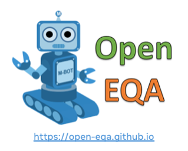
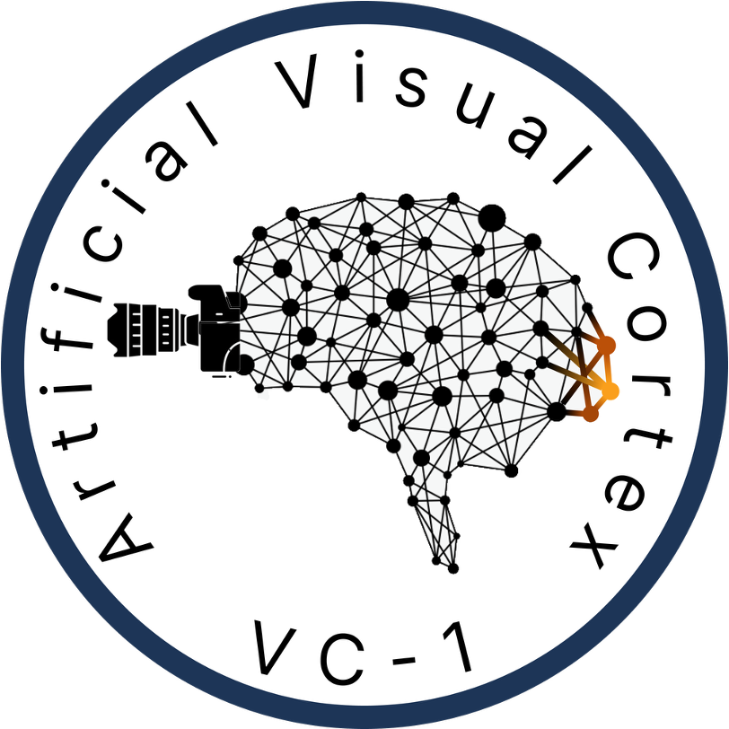
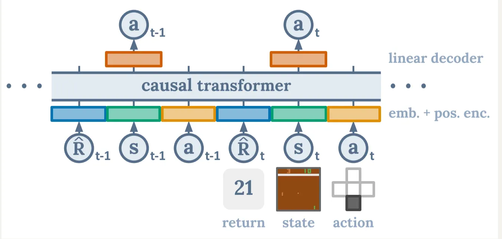
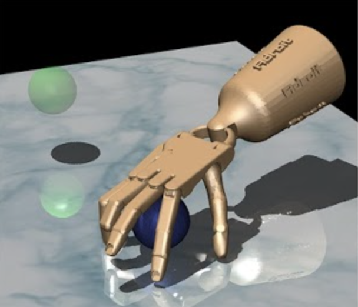

Aravind Rajeswaran
Research Scientist at Microsoft AI
I'm interested in building AI agents that can perceive, think, and act like humans in the open world, both digital and physical! For this, I lean on RL, world models, and visual imitation. I'm now at MAI building on-device computer use agents like Fara. Prior to this, I spent 4 years at Meta (FAIR) working on Embodied AI agents with Jitendra Malik, Dhruv Batra, and Abhinav Gupta. I also collaborated closely with Prof. Pieter Abbeel at UC Berkeley as a visiting researcher.
I received my PhD in Computer Science from the University of Washington working with Profs. Sham Kakade and Emo Todorov. I also worked closely with Sergey Levine and Chelsea Finn, and spent time as a student researcher at Google Brain and OpenAI. Before that, I received my bachelors and the best undergraduate thesis award from IIT Madras working with Balaraman Ravindran.
Selected Research


VC-1: Where Are We in the Search for an Artificial Visual
Cortex for Embodied Intelligence?
NeurIPS 2023


Mentoring
I enjoy collaborating with a diverse set of students and researchers. I have had the pleasure of mentoring some highly motivated students at both the undergraduate and PhD levels.
PhD Interns
- Philipp Wu (UC Berkeley, PhD → startup)
- Arjun Majumdar (GATech, PhD → Meta)
- Anurag Ajay (MIT, PhD → DeepMind)
- Mandi Zhao (Stanford, PhD)
- Nicklas Hansen (UCSD, PhD)
- Shikhar Bahl (CMU, PhD → Skild.AI)
- Allan Zhou (Stanford, PhD → OpenAI)
- Suraj Nair (Stanford, PhD → Physical Intelligence)
- Liyiming Ke (UW, PhD → Physical Intelligence)
- Andi Peng (MIT, PhD → co-founder, humans&)
- Yuchen Cui (UT Austin, PhD → Prof at UCLA)
University Students & AI Residents
- Aryan Jain (UC Berkeley, BS → Tesla Optimus)
- Sergio Arnaud (AI Resident, FAIR → Meta)
- Rafael Rafailov (Stanford, MS → Reflection AI)
- Karmesh Yadav (FAIR → Georgia Tech, PhD)
- Kevin Lu (UC Berkeley, BS → Thinking Machines)
- Ben Evans (UW, BS/MS → NYU, PhD)
- Sarvjeet Ghotra (IITM Intern → MILA, PhD)
- Colin Summers (UW, BS/MS → UW, PhD)
- Catherine Cang (UC Berkeley, BS → Reflection AI)
- Divye P. Jain (UW, BS/MS → Google)
Teaching
CSE599G: Deep Reinforcement Learning Instructor
I designed and co-taught a course on deep reinforcement learning at UW in Spring 2018. The course presents a rigorous mathematical treatment of various RL algorithms along with illustrative applications in robotics. Deep RL courses at UW, MIT, and CMU have borrowed and built upon the material I developed for this course.
CSE547: Machine Learning for Big Data Teaching Assistant
This is an advanced graduate level course on machine learning with emphasis on machine learning at scale and distributed algorithms. Topics covered include hashing, sketching, streaming, large-scale distributed optimization, federated learning, and contextual bandits. I was the lead TA for this class.